Shoutouts
Happy birthday to “The Enabler”! You’re a great friend and I really appreciate you’re warm enthusiasm.
Congrats to “Always up for a disc-ussion” on PRing in the mile with an incredible 5:39!
Monday
After making the bits go from 0 to 1 I went home and did laundry.
Tuesday
Once I finished taking some diffs and stewing them together into a PR I caught up with “The Boxer” and we went for a walk around The Panhandle. It was great to catch up with him and hear more about what he’s been up to. He may be moving to New York soon because his girlfriend got into grad school there. I’m super stoked for her but sad that he may be leaving soon. You will be missed! As we were walking he said he wanted to play spikeball and as luck would have it we were in the Panhandle on a Tuesday which if you’re either particularly observant or you’re either “The Spikeballer” or another reader who doesn’t have a nickname (but does have the current distinction of being the only reader I email the newsletter to), you’ll realize that spikeball happens in the Panhandle on Tuesdays so I brought him to play spikeball and it was a lot of fun.
We taught him some of the basics and before we knew it he was out there spiking as if he came out of the womb spiking the umbilical cord or something.
After walking around with “The Boxer” a bit more he left and I went to play more spikeball.
Wednesday
After another bout with the code griffin I went to Midnight Runners with “The Quant,” “Sergeant Sassy,” and some others. The run itself was pretty good up until I got shin splints around mile 3 and decided to take it easy and walk one of the miles and do a light jog for one of the others. One of my other friends said she is disappointed in me which is a travesty I will have to live with until the end of my days.
On may way back home I ran into “The Trivial Pursuit” on the MUNI and we talked about life, soccer, and midnight runners.
Thursday
Once I finished giving my keyboard a fingering I went to bar night with “The Mosher,” “That’s nuts,” “The Orchestra,” “The Awepartment,” “Generic White Guy,” “The Twitch Streamer,” and “The Awepartment’s” college friend. “The Twitch Streamer” told a joke that was both incredibly funny and incredibly offensive. Sadly I definitely can’t put this joke in the newsletter or even use it in most conversations but damn. I have a perverse fantasy of using it and seeing the ensuing chaos. It involves sprinklers and I will not go any further here except that if ya know ya know.
Friday
Something something clicky clack. After I clacked the clickies I planned to meetup with “The Quant” and “The Awepartment” to head to Oakland for a scavenger hunt. On my way to do so I had a brief run in with “The Dentist” and one of her other friends. We caught up briefly as they were about to go on a run. Once they sped off into the distance and I was left only to see a comically large amount of dust, I met up with “The Quant” and “The Aweparment” and we headed off.
For this scavenger hunt (SF Pursuit) we’re supposed to start at some bench in Oakland that “The Awepartment” tracked down. We start over at MacArthur station and made our way to this bench in Piedmont. We confirm its the right bench and get the next clue. This tells us that we need to go to some sort of park. Scanning for a second leads us to Glen Echo park. And then we have to go find a mural with something red on it. This leads to a grocery store called Piedmont Grocery Store which has been around since 1902. Finally we have to go to some city center that I don’t remember right now. I do remember that in order to get there we had to pass by some clock tower (not a particularly big one but a clock tower nonetheless).
Once we got to the city center that particular challenge was done and we got dinner at a restaurant. I would say which but I’m planning to take a certain reader there at some point and because I think it would be funnier that way I want it to be a surprise for that reader so I won’t spoil it here but it was a good one and I know this reader likes this kind of food so I think it will be a good time.
Later I get coerced into buy a new wallet because according to “The Awepartment” mine is a bit less than functional.
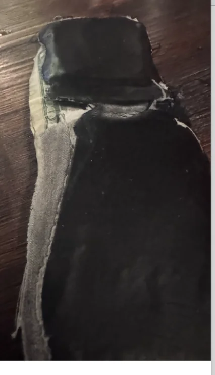
I tried to argue that mine is still functional because as you can see it is able to retain not only the opulent wealth you see oozing out but also all my cards, IDs, and other things. Apparently according to “The Awepartment” though a wallet isn’t just about holding those things which if you’re like me sounds incredibly weird. Like what is the point of a wallet. To use as a coaster?
Well the way he explained it to me was that in life entropy is always continually going up and I have to do my part to show that I am reducing entropy in my own life. Therefore if my wallet looks a bit tattered I need to get a new one to give the appearance that I am doing my part in the grand entropy reduction scheme that we call society. Failure to do so will not bite me in that my wallet is actually going to stop working but rather the social ramifications. I acquiesce and decide to get a new wallet.
I haven't bought it as of when this is chronologically set though because he was picky about what kind of wallet I buy. I wanted to buy the cheapest one possible because I don’t see the point in spending a lot of money on one but he refused to accept a $13 wallet. Eventually I bought this one
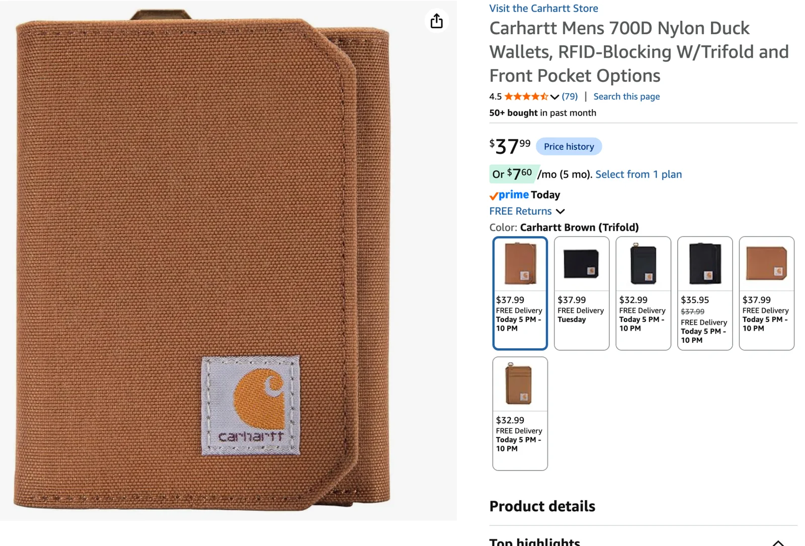
Carhartt is a popular brand so I think it does well in the doing what other people are doing and reducing entropy category of life quest.
Later we continued the scavenger hunt with an SF based clue. This one was interesting in that we had to go up to Coit Tower and there we can go to a website that lets us take control of a light and turn it on / off. We drive up to Coit Tower and take control of the aforementioned light. Once we do we have to try to find the location of said light. This is made a bit more difficult by the fact that the light itself is only active from 8:30PM-10:30PM each day and by the time we get to the tower we only had about 5 minutes left. We roughly triangulate the light and start driving around but aren’t really able to find it so we pack it up for the night feeling rather unenlightened.
Saturday
I was gonna go to Marina Run Club but was hit with a bad case of the I don’t feel like it’s so I lounged in bed. Then I hit trash pickup with “The Ravenkeeper” and other folks. After trash pickup I go to Costco and do my eye exam to get new glasses. My eyesight has actually improved since 2021 and now my vision is at a -1 -1 which is better than the -1.5 -1.5 it was at before. My new glasses should be arriving soon and then it will all be over :D.
Afterwards one of my coworkers invited me to a party where a bunch of bands were gonna be playing including his own. There I got to see a mixture of coworkers, college friends (this coworker is also a friend of mine from college), and some other folks. All the bands playing were great and my coworkers' band went extra hard! Granted some of that may have been because their band name is cunty boner but still. It felt a little bit like a mini college reunion which I loved.
From there I went to “The Enabler’s” birthday party. When I walked in both “The Enabler” and his girlfriend “Tightly knit” immediately started laughing. I think because I have a particular reputation for showing up right on time and I walked in right when the party started which I did true to form. I caught up with them for the first half hour before anyone else got here and got regaled by their tahoe trip while I in turn told them about the 24 hour walk. As part of the party I got a drink ticket which I spent on a pretty good mocktail that had pineapple in it which is always a blast.
Later a bunch more people like “La Tacqueria Royalty,” “Always up for a disc-ussion”, “The Dentist’s” childhood friend, a second dentist who I know to the point that I’m on the cusp of giving her a nickname, and a bunch of others who don’t have newsletter nicknames showed up. It was really satisfying catching up on HxH and One PIece with “La Tacqueria Royalty” and exchanging theories about *that prince*.
As is tradition I got a birthday card for “The Enabler”
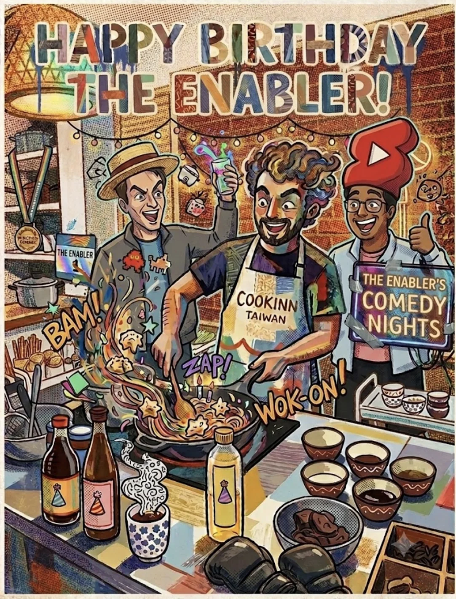
Some people said there was a typo in the card in that the T in Birthday was a 1 instead of a T but as you can clearly see that is wrong and people clearly only thought that because the bar was kinda dark. THERE WAS NO TYPO AND I WANT THAT STATED DEFINITIVELY FOR THE RECORD.
After talking with a bunch more people including this really cool guy named Anthony who I want to become better friends with, I head out to meet up with “The Philosopher,” “Generic White Guy,” his girlfriend, “The Awepartment,” and another person over at Lilly Coit’s. It was a nice relaxed catchup to end the day as I farmed “The Philosopher” on his worldwide travels from India to Japan. We then went back to “The Awepartment’s” place and I had a bit of the lamb he cooked earlier. It was succulent.
Sunday
I went to a barbecue that “Granola Girlie” was hosting. She will be moving to Utah soon for graduate school and while I am stoked for her to continue her neuroscience journey I am bummed that she will be moving so I gotta see her while I can.
I brought a comically large amount of Hebrew national hotdogs. They’re a kosher hotdog brand that me and “The Philosopher” love to eat. I got 5 packs of hot dogs even though one would have worked in retrospect. Consider this, we have 5 people at this bbq: me, “The Philosopher,” “Granola Girlie,” “The Inquisitor,” and another gent who I don’t know that well. Already this is one pack of hot dogs per person, but now take into account the fact that only me and “The Philosopher" actually eat these things and you can see the predicament in. In the end I took most of the hot dogs home with me to put in the freezer and as a bit of a bonus “The Philosopher” gave me some Polish sausages to put in my freezer as well. Since these also have pork I won’t be eating them. You might be asking what I intend to do with these sausages? The answer is I don’t know. I think I will be bringing them to something so look out for the payoff to this incredible setup.
I then took all the dogs and headed over to meetup with “The Menace” and “Let me give you a call on the world’s smallest phone” to watch the final game of the World Cup. It’s Spain vs Argentina and as someone who wants Argentina to eat shit I am wholeheartedly rooting for Spain. The game itself is alright. For the vast majority there isn’t really any scoring but Spain actually gets shots on goal unlike Argentina which I’m happy about. Eventually 107 minutes into the game and well into overtime Spain finally scored a goal much to the excitement of me and everyone else there. “The Menace” made some $$ after betting on kalshi that Spain would win so now he is an elite member of the bourgeoisie. I hear he is in talks to buy the appropriate top hat and monacle.
Once the game ended I found that the bag I was holding all the dogs in got soggy so I was basically just using it as a glorified cover. The bus ride back was interesting as I carried the dogs back amongst a turbulent bus ride trying my best not to drop them.
Thankfully the dogs made it back in one piece. I know “Granola Girlie” is gonna be having at least one more BBQ with significantly more people so expect the hebrew nationals to be consumed then.
Personal training progress for the week
Charts below show progress through 7/16/2026 for every exercise from the 7/16/2026 workout; later dates are excluded. The metric is average load per rep across the logged sets rather than total volume.
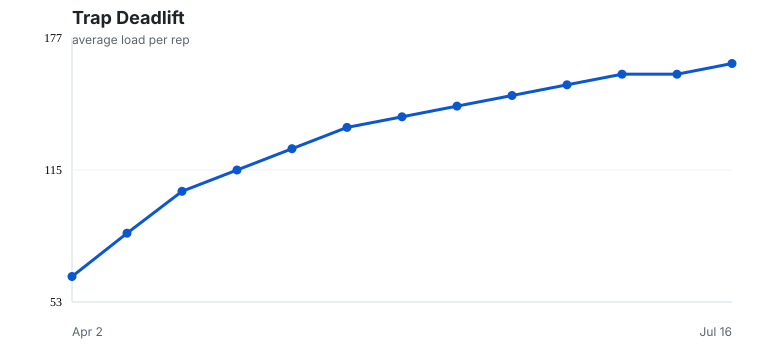
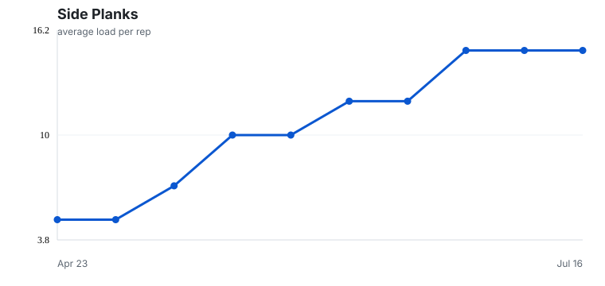
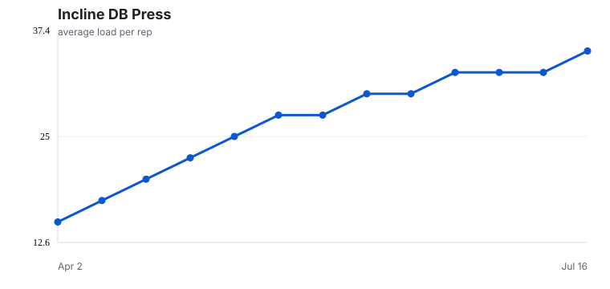
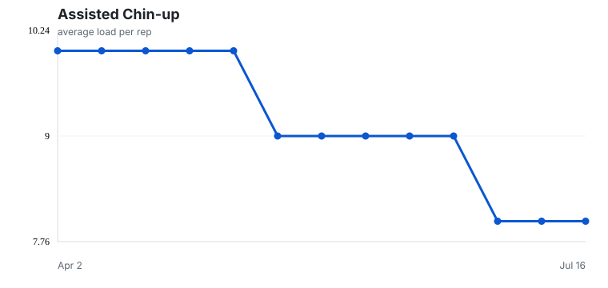
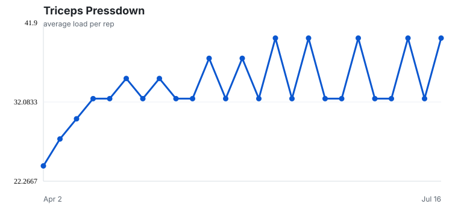
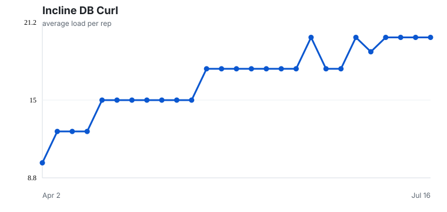
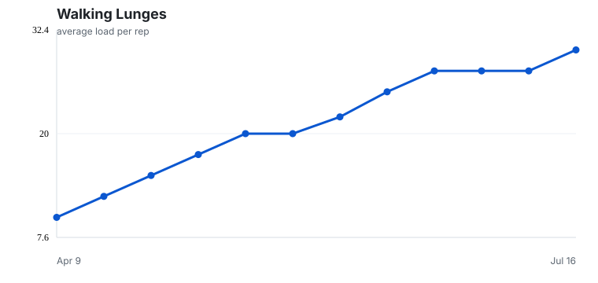
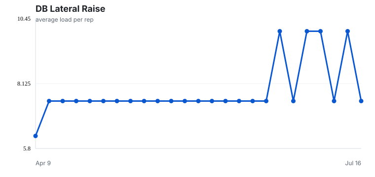